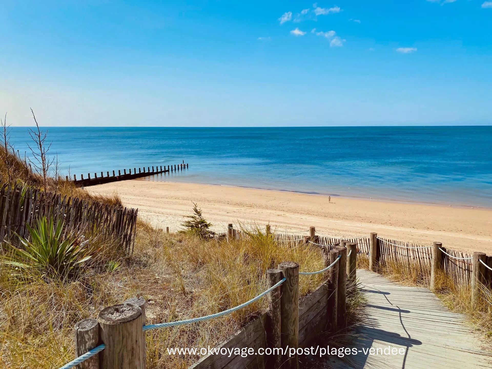
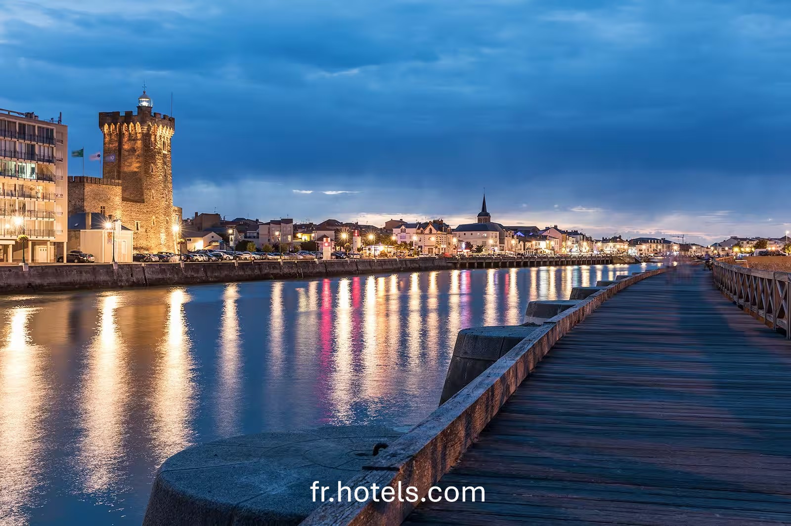
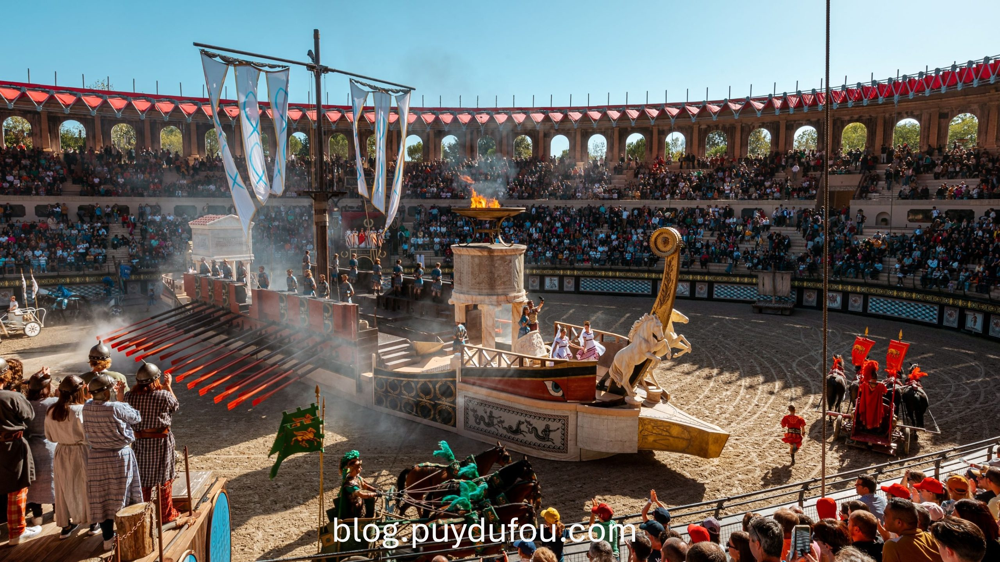

Mon premier article
Publié le 24 septembre 2025
Voici un article d’exemple pour montrer à quoi ça ressemble dans la section Articles.
Le cactus de l'info !
Bienvenue sur LookActu ! Ici, je vous parlerai d’actualité, du collège, d’interviews, et de plein d’autres sujets intéressants.
Publié le 24 septembre 2025
Voici un article d’exemple pour montrer à quoi ça ressemble dans la section Articles.
Publié le 24 septembre 2025
Le collège Saint Joseph, situé au cœur de Fontenay-le-Comte en Vendée, est bien plus qu’un simple établissement scolaire. C’est un lieu où chaque élève est encouragé à développer ses compétences, sa curiosité et son esprit critique, dans un cadre sécurisé et bienveillant.

Le bâtiment principal allie modernité et tradition. Il offre des salles de classe lumineuses et bien équipées, permettant aux professeurs de proposer des cours variés et dynamiques. La proximité entre élèves et enseignants favorise un suivi personnalisé, essentiel pour la réussite scolaire.
Le collège dispose également d’espaces dédiés à la détente et à la culture, comme une bibliothèque riche en ouvrages, un auditorium pour les spectacles, ainsi que des terrains de sport où les élèves peuvent pratiquer différentes disciplines.

Mais ce qui fait vraiment la richesse du collège Saint Joseph, ce sont ses nombreuses activités extrascolaires. Les clubs artistiques, sportifs et scientifiques offrent à chacun la possibilité de s’investir dans ses passions ou d’en découvrir de nouvelles.
Parmi ces activités, l’atelier journalisme tient une place particulière. Il permet aux élèves de s’initier à la rédaction d'articles pour partager les infos du collège et de sujets dans notre intéret.

Enfin, l’attention portée au bien-être des élèves est au cœur des préoccupations du personnel. Des actions de prévention, un accompagnement psychologique et un climat scolaire positif contribuent à faire du collège un environnement où il fait bon apprendre et grandir.
En résumé, le collège Saint Joseph est une communauté éducative où chacun peut trouver sa place, progresser et construire son avenir dans un cadre stimulant et humain.
Publié le 24 septembre 2025
Située sur la côte atlantique, dans la région des Pays de la Loire, la Vendée est l’un des départements français les plus prisés pour sa diversité naturelle, son patrimoine culturel riche et son attractivité touristique.
Un littoral d’exceptionAvec plus de 250 km de côtes, dont 140 km de plages de sable fin, la Vendée attire chaque année des millions de visiteurs. Les stations balnéaires comme Les Sables-d’Olonne, Saint-Jean-de-Monts ou La Tranche-sur-Mer sont très populaires pour les activités nautiques et les longues promenades en bord de mer.
 Un patrimoine riche et vivantLa Vendée, c’est aussi une terre d’histoire. Du célèbre Puy du Fou – élu plusieurs fois meilleur parc au monde – aux vestiges médiévaux comme le Château de Tiffauges, en passant par les traditions vendéennes, le département conserve une forte identité.
Le territoire a également été marqué par les Guerres de Vendée, un épisode clé de la Révolution française, encore très présent dans la mémoire locale.
 Un territoire entre modernité et natureCôté nature, la Vendée propose une diversité impressionnante : marais poitevin, bocage vendéen, forêts domaniales, pistes cyclables (plus de 1 000 km !) et réserves naturelles offrent un terrain de jeu idéal pour les amoureux de plein air.
Avec une qualité de vie élevée, une économie dynamique, notamment dans le nautisme et l’agroalimentaire, la Vendée continue d’attirer aussi bien les touristes que les nouveaux habitants.
Découvrez l'interview exclusive d'un élève de la 4B, qui partage ses projets et passions.
Publié le 24 septembre 2025
LookActu est un site créé par un collégien passionné de journalisme. Ce site a pour but de partager des articles, interviews et infos du collège Saint-Joseph de Fontenay-le-Comte.